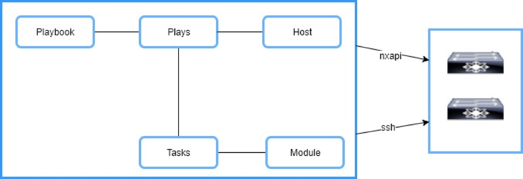
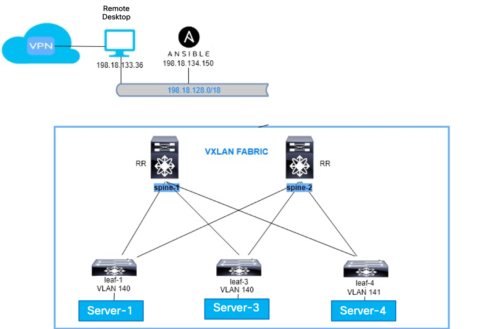

Introduction
VXLAN
VXLAN stands for Virtual Extensible Local Area Network. VXLAN is a L2 overlay scheme on top of L3 network or we can say it is a L2 in layer 3 tunnel. It runs over the existing networks and provides the means to stretch the L2 network. Only VMs within the same VXLAN segment can communicate with each other. Each VXLAN segment is identified by a 24 bit segment ID called “VXLAN Network Identifier (VNI)”. This help overcome 4094 VLAN scale limitation and able to extend it to 224 segments. VXLAN uses BGP as its control plane for Overlay. It makes it forwarding decisions at VTEPs (Virtual tunnel end points) for layer-2 and layer-3. Forwarding happens based on MAC or IP learnt via control plane (MP-BGP EVPN) . VXLAN uses IGP, PIM and BGP as its underlay in the fabric. Below are some of the terminologies that will be used in the lab:
- VNI / VNID – VXLAN Network Identifier. This replaces VLAN ID
- VTEP – VXLAN Tunnel End Point.
- This is the end point where the box performs VXLAN encap / decap This could be physical HW (Nexus9k) or Virtual (Nexus 1000v, Nexus 9000v)
- VXLAN Segment - The resulting layer 2 overlay network
- VXLAN Gateway – It is a device that forwards traffic between VXLANS. It can be both L2 and L3 forwarding
- NVE – Network Virtualization Edge
- NVE is tunnel interface. It represents VTEP
Ansible
Ansible is an agentless open source software that can be used for configuration management, deployment and orchestration of deployment. The scripts in Ansible are called playbooks; playbook is in YAML format that was desgiened to be easy for humans to read and write. Playbooks include one or more plays, each play include one or more tasks. Each task is associated with one module, which is what gets executed in the playbook. Modules are python scripts that ship with Ansible installation. During the lab, you will be introduced to multiple NXOS modules and ansible template module.
You can find all Ansible modules documentation at below url: http://docs.ansible.com/ansible/latest/list_of_all_modules.html Below are some of the terminologies that will be used in the lab:
- Host: remote machines that Ansible manages
- Group: several hosts that can be configured together and share common verables
- Inventory: file descripts hosts and groups in Ansible.
- Variable: names of value (int, str, dic, list) referenced in playbook or template
- YAML: data format for Playbook or Variables in Ansible
- Playbook: the script to orchestrate, automate, deploy system in Ansible. One playbook can include multiple plays.
- Roles: group of tasks, templates to implement specific behavior
- Jinja2: a Python based tempting language

About this lab
As a standardized overlay technology, multiple vendors have adopted VXLAN as datacenter solution to provide scalability and allow layer 2 across IP network. MP-BPG EVPN as VXLAN control plane protocol provides a robust scalable solution to overcome the limitation in VXLAN flood and learn mode. As an open source automation tool, Ansible provides the same framework for network administrators to automate network infrastructure as the rest IT organization. This lab demostates the possibility of using Ansible to automate datacenter VXLAN fabric day 1 provisiong and day 2 operations.
Lab Flow
Lab guide will walk the attendees through the below activities: 1. Ansible installation 2. Ansible playbook 3. Day 1 automation using Ansible 4. Day 2 automation using Ansible 5. Day 0 automation 6. L4-L7 Service insertion
Lab Access
Below table provides the IP addresses and credentials for the devices used in this lab:
| Device | SSH or Console (C) | Credentials |
|---|---|---|
| Spine-1 | C: 198.18.133.33:1030 .... SSH: 198.18.4.201 | admin/C1sco12345 |
| Spine-2 | C: 198.18.133.33:1040 .... SSH: 198.18.4.202 | admin/C1sco12345 |
| Leaf-1 | C: 198.18.133.33:1050 .... SSH: 198.18.4.101 | admin/C1sco12345 |
| Leaf-3 | C: 198.18.133.33:1070 .... SSH: 198.18.4.103 | admin/C1sco12345 |
| Leaf-4 | C: 198.18.1333.33:1080 ... SSH: 198.18.4.104 | admin/C1sco12345 |
| Server-1 | SSH: 198.18.134.50 | root/C1sco12345 |
| Server-3 | SSH: 198.18.134.52 | root/C1sco12345 |
| Server-4 | SSH: 198.18.134.53 | root/C1sco12345 |
| Ansible Server | 198.18.134.150 | root/C1sco12345 |
| Remote Workstation | 198.18.133.36 | demouser/C1sco12345 |
Lab topology
Below picture shows the lab topology:
